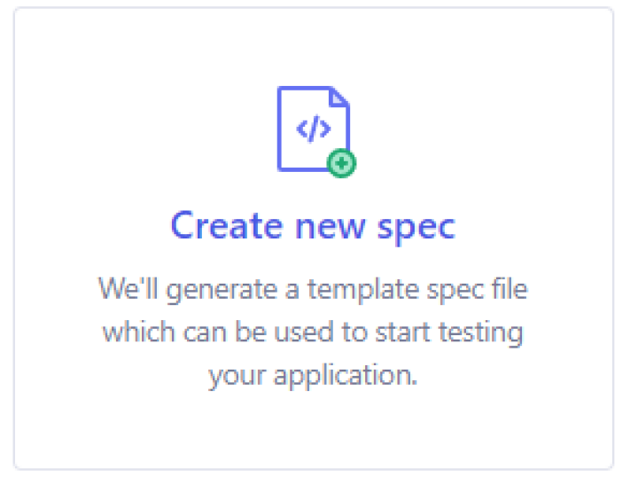

Introduction à Cypress pour les tests end-to-end dans une application React
Les test end-to-end
Les tests end-to-end sont une pratique essentielle dans le développement pour garantir la qualité et le bon fonctionnement d’une application. Ces tests permettent de vérifier le comportement d’une application dans son ensemble, en simulant les interactions de bout en bout entre les différents composants et systèmes.
L’objectif principal des tests E2E est de s’assurer que l’application fonctionne correctement dans un environnement proche de la production, en reproduisant les interactions réelles de l’utilisateur avec l’application. Ils sont généralement réalisés en automatisant les actions utilisateur, telles que la saisie de données, la navigation sur le site web ou l’utilisation de fonctionnalités spécifiques, afin de vérifier que l’application se comporte comme prévu.
Présentation de Cypress
Cypress est une bibliothèque de tests automatisés pour les applications. Elle est conçue pour faciliter la création, l’exécution et la maintenance de tests end-to-end, offrant ainsi une excellente expérience pour les développeurs.
L’une des fonctionnalités les plus puissantes de Cypress est sa capacité à exécuter les tests directement dans le navigateur. Cela signifie que vous pouvez voir en temps réel l’exécution de vos tests et déboguer facilement en utilisant les outils de développement du navigateur. Cette approche unique élimine les problèmes liés à la communication entre le navigateur et le testeur, ce qui rend les tests plus fiables et plus rapides.
Cypress propose également une API riche qui permet de réaliser des actions complexes et de vérifier facilement l’état de votre application pendant les tests. Vous pouvez simuler des interactions utilisateur telles que le clic, la saisie de texte et la soumission de formulaires. De plus, Cypress offre une grande variété d’assertions prédéfinies pour vérifier les résultats attendus de vos tests.
Une autre caractéristique intéressante de Cypress est sa capacité à effectuer des tests de manière asynchrone. Il gère automatiquement les attentes et les délais, ce qui évite les problèmes de synchronisation couramment rencontrés dans d’autres outils de test. Cela permet de rédiger des tests plus stables et plus fiables, tout en réduisant le temps nécessaire pour les exécuter.
Installation de Cypress
Méthode
Afin d’installer Cypress à notre projet, nous pouvons écrire la commande suivante dans le terminal de notre éditeur :
npm install cypress -save-dev
Nous avons maintenant Cypress dans notre application dans sa dernière version actuelle disponible (actuellement 12.14.0)
Exécution de Cypress
Méthode
Afin d’exécuter Cypress, nous pouvons écrire la commande suivante dans le terminal :
npx cypress open
Configuration des test end-to-end
Méthode
Maintenant que Cypress est lancé, nous allons cliquer sur E2E Testing afin d’entamer la configuration des test end-to-end :
Ensuite, nous avons la liste des différents fichiers qui vont être ajoutés à notre projet, notamment le fichier de configuration de Cypress, nous pouvons appuyer sur le bouton Continue.
Enfin, nous pouvons choisir le navigateur dans lequel nous souhaitons exécuter nos tests et appuyer sur le bouton Start E2E Testing in “Nom du navigateur”.
Création d’un test
Méthode
Maintenant que Cypress a lancé le navigateur, nous allons pouvoir mettre en place notre premier test.
Cliquez sur la partie Create new spec :
Ensuite, nous avons la possibilité de personnaliser le nom et le chemin d’accès à notre nouveau test, nous pouvons laisser le nom par défaut et simplement cliquer sur le bouton Create Spec.
Un message de confirmation s’affiche et le test d’exemple a été automatiquement créé et ajouté à notre projet dans le dossier cypress/e2e/.
Nous pouvons tenter d’exécuter ce test en cliquant sur le bouton Okay,run the spec.
Dans l’interface présente dans le navigateur, nous pouvons remarquer que le test s’est passé correctement :
Par ailleurs, sur la droite un aperçu de l’application est visible :
En effet, le test d’exemple fourni par Cypress a réalisé une navigation vers l’URL ('https://example.cypress.io') grâce à sa méthode visit().
Personnalisation de notre test
Méthode
Nous pouvons accéder au fichier spec.cy.js afin de supprimer le test d’exemple et créer à la place un test qui va réellement tester notre application. Dans ce fichier, nous écrivons le code suivant :
See the Pen Untitled by OpenSpirit (@OpenSpirit) on CodePen.
Veuillez noter qu’il est nécessaire d’importer le composant Users dans le composant principal App et de retourner une instance de ce composant.
Ici nous avons repris la même logique que les tests préalables réalisés avec Jest.
Après nous être assurés que le serveur de test est toujours lancé, nous utilisons la méthode visit afin d’indiquer à Cypress de se rendre sur la page de notre application lancée sur le live serveur en spécifiant l’URL.
Ensuite, nous vérifions que le prénom Arthur n’est pas affiché dans l’application, puis nous simulons un clic sur notre bouton “Afficher Liste”.
Enfin, nous vérifions que le prénom Arthur est maintenant présent dans l’application.
Dans l’interface de Cypress ouverte dans le navigateur, nous retrouvons le test qui a été passé avec succès avec le détail des étapes testées :
Vérification de la longueur des noms
Méthode
De la même manière, nous pouvons également vérifier le résultat de l’exécution de notre fonction nameLength qui vérifie la longueur des noms d’utilisateurs.
Pour cela nous pouvons compléter notre test avec le code suivant :
See the Pen Untitled by OpenSpirit (@OpenSpirit) on CodePen.
Nous avons en premier lieu importé notre fonction nameLength.
Ensuite, nous stockons le résultat de notre fonction nameLength, puis nous vérifions qu’elle contient le nom Arthur, mais pas le nom Lola qui possède moins de 5 lettres.
Maintenant, nous pouvons exécuter le test avec Cypress et nous avons le résultat du test qui s’affiche dans l’interface :